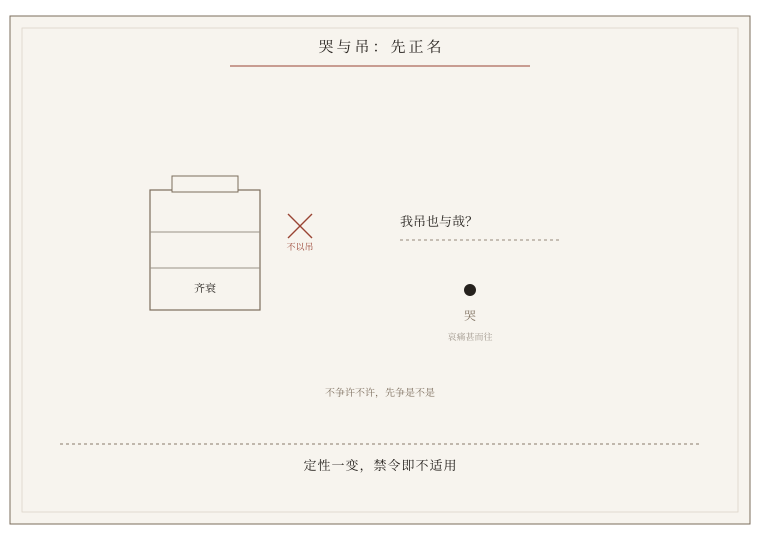

檀弓下 · 四·八 · 第 333 课
子张死，曾子有母之丧，齐衰而往哭之。或曰：「齐衰不以吊。」曾子曰：「我吊也与哉？」
说什么事：子张死时，曾子正有母丧，穿着齐衰去哭他。有人说：「齐衰不可以用于吊。」曾子答：「我这是吊吗？」
落在哪一层：以「名」量礼。论「先正名，再论礼」。
为何编在此位：三百三十二课论「位」，此课论「名」。位定则众不乱，名正则禁不施。
【经】子張死，曾子有母之喪，齊衰而往哭之。或曰：「齊衰不以吊。」曾子曰：「我吊也與哉？」
【注】以其無服非之。／於朋友哀痛甚而往哭之，非若凡吊。
【疏】此一节论哭朋友失礼之事。注「以其至非之」：言曾子与子张无服，不应往哭，故或人非之也；若有服者，虽缌亦往也。
子张 孔子弟子，姓颛孙，名师。
齐衰 丧服之一种。曾子为母服齐衰。
不以吊 不可用来行吊礼。
与哉 语气词，表反问。「与」读如欤。
子张死了，曾子正有母丧，穿着齐衰去哭他。有人说：「齐衰不用来行吊礼。」曾子说：「我这是吊吗？」
此章极短，只有一问一答。全部要义在最后三字：「也与哉？」
或人指出的是「齐衰不以吊」——这是礼的明文。曾子没有否认这条，他否认的是「这是吊」。
所以他不是「违礼」，是「改名」。
第一层 「齐衰不以吊」：礼的明文 齐衰是重服，不可兼用于吊。吊有吊服（如缌衰），不可混用。
这一条极硬：衣服是分档的，一衣不可两用。或人的指责，于礼有据。
第二层 曾子的辩法：先正名 他不说「我可以」，说「这不是吊」。
这是礼学最精的一种辩法：不争「许不许」，先争「是不是」。定性一变，禁令即不适用。
「齐衰不以吊」——若此事是吊，则禁；若不是吊，则禁不及。曾子把这件事从「吊」移到「哭」，禁令便落了空。
第三层 注的申明：哀痛甚 注「于朋友哀痛甚而往哭之，非若凡吊」。
这一句是替曾子说：他不是不懂礼，是不肯把这事办成礼。凡吊有仪、有辞、有授受；此来只是哭。
礼与情的关系，在此露出一角：有些事，一旦按礼办，就轻了。
第四层 疏的补：「若有服者，虽缌亦往」 疏补一句：「若有服者，虽缌亦往也。」
这是把界限划清：有服则往，是礼；无服而往哭，则须自别于「吊」。故曾子之往，非法外之情，是「情在礼外，而礼不能禁」。
第五层 今日之用：正名的力量 今人以「不合规矩」相责，被责者多辩「我有苦衷」。苦衷是情，不能破规。
曾子不辩苦衷，辩「这不是那件事」。此法今日可用：先正名，再论礼。名不正，则争在情；名正，则争在理。
与今日何干 今日多有「制度不许，人情难却」之困。此节的答法是：先问「这是不是制度所说的那件事」。若不是，制度本无禁；若是，则不可假借情分。含混其名而两存之，是最坏的一种。
| 左 | 右 |
|---|---|
| 齐衰不以吊 | 礼之明文 |
| 或人 | 以其无服非之 |
| 我吊也与哉 | 正名，非辩情 |
| 哭 | 哀痛甚而往 |
| 吊 | 有仪、有辞 |
| 有服虽缌亦往 | 疏所补 |
| 先正名 | 再论礼 |
画一处他人家门之外，视点平视。门外一人着齐衰（衣粗色深、腰有绖），正俯身向门内，一手扶门框；门内隐约一具素帷（不画细节）。门外侧后另立一人，只画衣与手，作欲言又止之状。不画人面、不写文字。赭色只用在扶门那只手的袖口，与门框一道。
